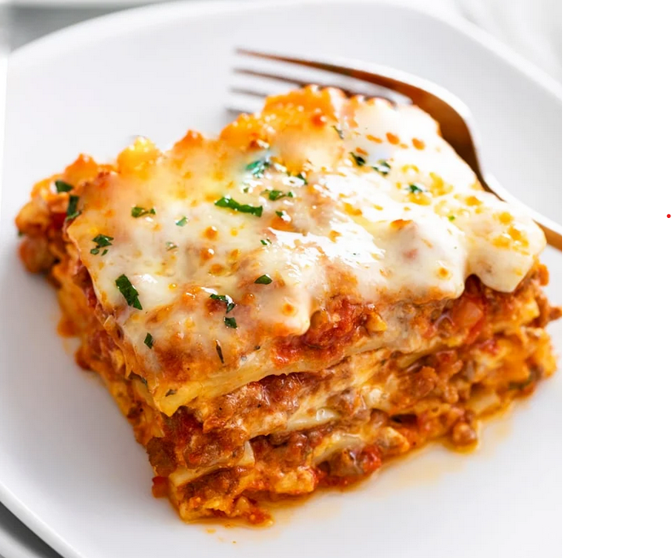

this is Lasagna recipe

Easy Lasagna Recipe
This Lasagna Recipe is easy to make with a creamy ricotta cheese mixture, savory meat sauce, and mozzarella cheese.
BONUS: it’s make-ahead and freezer-friendly!
Be sure to try my Baked Ravioli Recipe and Eggplant Parmesan recipes next!
A white plate with Lasagna on it with a fork in the background.
Easy Lasagna Recipe
I suppose since I have recipes for Skillet Lasagna, Lasagna Soup, Lasagna Roll Ups, and Taco Lasagna, we are long
overdue for me to share my easy, classic lasagna recipe.
This recipe has simple ingredients but tons of flavor with a creamy ricotta mixture, savory meat sauce, and lots of
mozzarella cheese.
This is a great freezer meal, make-ahead recipe, and leftovers freeze and reheat super well.